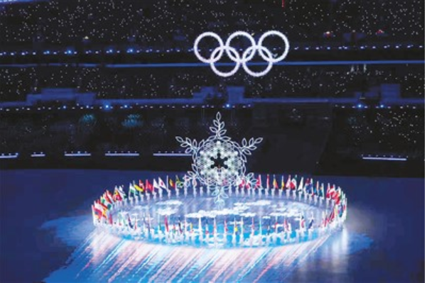
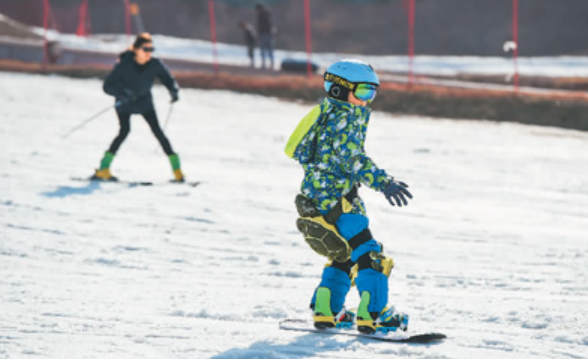

北京冬奥会、冬残奥会胜利闭幕了，留给世界数不尽的美好记忆和无穷回味。
国际奥委会主席巴赫由衷赞叹：“这是一届真正无与伦比的冬奥会。”2008年在北京举办了一场无与伦比的奥运会，2022年又举办了一届无与伦比的冬奥会，“双奥之城”创造了双重的无与伦比，在人类文明史上写下浓墨重彩的一笔，留下了丰厚的文化遗产。

绿色节能的办会理念，完善、精美的场馆设施，优异精细的赛事管理……而更令人难忘的是，北京冬奥会突出展示了中国奥林匹克的人文境界、人民情怀，更展示了宏阔的全球视野和人类大爱，它是奥林匹克积极快乐的生活哲学和生命美学的完美体现和创新成果，为推动构建人类命运共同体注入了磅礴力量。
奥林匹克运动会是体育盛会也是文化盛会，是世界各民族文化交流互鉴的平台。北京冬奥会向世界生动展示了博大精深的中华文明，展开了一幅幅中华文化与奥林匹克精神交相辉映的美丽画卷。

北京冬奥会开幕式以二十四节气倒计时开始，传递出独特的文化韵味。二十四节气是中国古代先民智慧的结晶，也是宝贵的人类非物质文化遗产，体现了尊重自然、顺天应时的理念。一滴冰蓝色水墨从天而降，幻化为波涛奔涌的黄河，演绎了“黄河之水天上来”的豪迈诗情。绽放于鸟巢上空的“迎客松”、迎接运动员入场的“冰雕中式门窗”、融橄榄枝与中国结为一体的“大雪花”……一个个匠心独运的设计，尽显中国人的热情、自信与开放。
在冬奥会闭幕式上，“折柳送别”的动人场景，表现了中国式的浪漫情怀。初春的柳枝，柔嫩而富有朝气，意味着生命、希望和成长。在中国古代，柳树是寄托思念之树，折柳是送别的重要仪式。冬奥盛会闭幕之际，通过折柳的形式，传达了与各国友人依依惜别的深情厚意，体现了温厚悠长的东方文化之美。
北京冬奥会赛场内外鼓荡着浓浓的中国风，让参赛选手和世界各地观众留下深刻印象。从彰显汉字之美的冬奥会会徽，到以国宝熊猫、中国灯笼为原型设计的“冰墩墩”“雪容融”；从展现东方神韵的冬奥场馆建筑“雪如意”“冰丝带”“雪飞天”，到融入长城、烽火台元素的滑雪赛道和跳台；从灵感源自古代同心圆玉璧的奖牌，到采用非遗“海派绒线编结技艺”编织的颁奖花束；从“中国龙”战衣、“孙大圣”头盔、“千里江山图”花样滑冰比赛服，到礼仪人员服饰上的“瑞雪祥云”“鸿运山水”“唐花飞雪”……观看冬奥会，不仅享受了精彩绝伦的视觉盛宴，同时还能领略悠久厚重的中华文化的魅力。
奥林匹克精神的核心是积极快乐的生活哲学和生命美学。奥林匹克运动强调所有人不论肤色不论贫富不论地位，都能通过自我锻炼、积极参与，拥有健康的体魄、乐观的精神和对美好生活的热爱。奥林匹克追求人的精神和力量的自由实现，它对人的身体极限的探索，对人类潜能的开发，对人的精神的锤炼，都具有重要意义。正如国际奥委会前主席萨马兰奇所说，它是“将身体活动、艺术和精神融为一体而趋向一个完整的人”。对于每个参与者来说，奥运会是一个盛大的节日，是一场快乐的体验，是一种美的享受。奥运会的生命力在于大众的参与，在于奥林匹克精神更广泛的普及。
“仁者，生生之德也。”中国人文精神的宗旨，是对于生命的关怀。从2008年夏季奥运会到2022年冬季奥运会，坚持以人为本的奥运始终是北京奥运精神的核心。它关注人、热爱人、尊重人、提升人，追求人的全面和谐发展。北京冬奥会申办成功以来，中国着力推广冰雪运动，积极推进“南展西扩东进”战略，使冰雪运动实现全国覆盖。截至2021年10月，中国参与冰雪运动的人数达3.46亿，冰雪运动参与率超过24%。这是中国推动体育强国、健康中国建设的伟大成就，也是中国促进世界体育事业发展的巨大贡献。巴赫指出，中国在冬季运动方面取得的非凡成就，开启了全球冬季运动的新时代，将使全球冬季运动参与度登上新台阶，让中国人民和全球各地的冬季运动爱好者从中受益。
当今世界，和平、发展、合作、共赢成为时代潮流，中国人比以往任何时候都更强烈地感受到对积极健康的生活方式以及由此带来的人文精神的渴求。2008年奥运会的一个重大成就，就是唤醒了国人的健康意识、绿色意识、体育锻炼意识。2022年冬奥会则促进了中国冰雪运动的推广和普及，弥补了中国体育“夏强冬弱”“冰强雪弱”的差距。今天，中国特色的奥运理念中，包含了当下中国人民乐观向上的精神风貌、奋勇拼搏的昂扬斗志、开阔包容的胸襟气度，以及对人类共同文明的崇尚和发扬、对民族文化的强烈自信。
奥林匹克奉守“和平、友谊、进步”的宗旨，鼓舞大众参与体育运动，追求“更快、更高、更强——更团结”，激励世界各国人民特别是青年一代为建设一个更美好的世界而奋斗。
巴赫说，奥运会是全人类的一次伟大团结的聚会，给全人类带来对更美好未来的期待。在今天充满不确定性的世界中，奥运会比以往任何时候都更成为多元化世界中全人类希望、和平和团结的有力象
作为疫情发生以来首次如期举办的全球综合性体育盛会，北京冬奥会展现了中国人重信守诺的决心和魄力，更向世界传递了不惧困难、战胜疫情的宝贵信心。
北京冬奥会严格落实“双闭环”管理，完善场馆防疫措施，有效防止疫情发生；“黑科技”铺就“最快的冰”，促成了多项奥运纪录和世界纪录的诞生；冬奥会志愿者们克服重重困难，以真诚亲切的微笑和周到完善的服务赢得了世界的赞叹……中国成功举办了一届简约、安全、精彩的奥运盛会，为世界奥林匹克事业续写了新的传奇，也为疫情之下如何实现可持续发展提供了有益启迪。